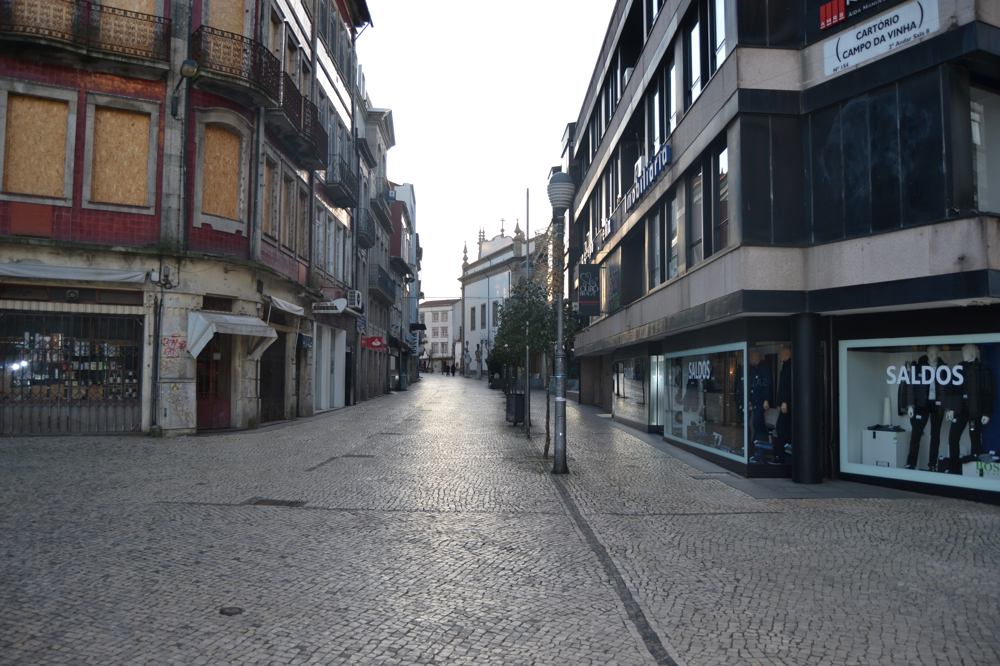

Rua da Fonte da Carcova
Descrição:
A sua fundação, remontará talvez aos inícios do séc. XVI. Marginando a muralha medieval, fazia ligação entre os dois novos e amplos campos então abertos, de Santa Ana e da Vinha.
No seu extremo Este existia, desde a Idade Média, uma fonte, conhecida pela Fonte da Cárcova ou Cárcoda.
Embora a sua ocupação se tenha iniciado de imediato (p.ex. o prazo do Cabido mais antigo nesta rua data de 1531), ee incidiu apenas sobre o lado Norte, porque no mapa de Braunio não se vê ainda nenhuma construção encostada à muralha.
Em 1750 mostrava bem a razão por que foi denominada, em data que desconehcemos, de rua dos Mercadores: o rés-do-chão era totalmente ocupado com largas portas de madeira que durante o dia se abriam para afzer o comércio.
De resto é predominantemente ocupada com prédios de 3 andares, e janelas bracarenses, e poucas varandas e gelosias. Diferentes são apenas os prazos 5, 6 e sobretudo o 7, onde se vê uma construção setecentista já de certa dimensão, com duas varandas, «molduras» de pedra nas aberturas e, sobretudo, um dos vãos extremos da casa tem mais um piso, reminiscência talvez de opções estilísticas mais arcaicas.
Das 27 casas aqui desenhadas e que correspondem apenas ao lado Norte da rua, 10 eram prazos do Cabido.
Desde 1865 que passou a ser oficialmente denominada de rua dos Capelistas.
Aberta em data desconhecida. No Tombo do Cabido (cª 1369-80), já figura este topónimo.
Estabelecida a ligação entre o largo dos Penedos e os espaços onde bastante mais tarde, nos meados do séc. XVII, se construiu a igreja e convento do Carmo.
Em 1750, era uma rua que alternava, um pouco a esmo, casas de 1, 2 ou 3 pisos, de bom ou mau desenho, de famílias pobres ou ricas, numa indefinição absoluta: vêem-se aqui casas grandes, com bom trabalho de pedra e casas do tipo de porta com janela ao lado, no piso térreo. Só com uma leitura dos prazos se poderá definir o tipo de vivência que nela se fazia, o que nos parece poder dar resultados muitíssimo interessantes.
Das 27 casas aqui desenhadas e que correspondem apenas ao lado Sul da rua, 18 eram prazos do Cabido.
Mantém o nome de rua do Carvalhal.
Confronta, do poente, com cada foreira à capela de Sta. Marta.
A casa n.º2 esteve unida ao n.º1 entre os anos de 1608 e 1690.
A casa n.º2 esteve unida ao n.º1 entre os anos de 1608 e 1690.
A casa n.º2 esteve unida ao n.º1 entre os anos de 1608 e 1690.
Os n.º5 e 6 encontram-se unidos desde o ano de 1541.
Os n.º5 e 6 encontram-se unidos desde o ano de 1541.
Esteve unida ao n.º9 entre os anos de 1531 e 1625.
O enfiteuta foi herdeiro de Brígida Marques, casada com Manuel da Costa, marceneiro.
Esteve unida ao n.º8 entre os anos de 1531 e 1617.
Confronta, do nascente, com o Eirado.
Pertence à casa n.º24 da Rua dos Chãos de Baixo, para onde tem a frontaria e serventia principais.
Pedro Sepúlvedra, casado com Ângela das Neves, paga 72 reis ao n.º18.
José Francisco, lavrador da Freguesia de Sta. Lucrécia, casado com Maria Lopes, paga 72 reis ao n.º18.
João da Costa, casado com Teresa Ferreira, paga 117 reis ao n.º18.
Francisco Dantas, escrivão dos direitos reais, casado com Grácia Maria de São Boaventura, paga 504 reis ao n.º18.
O Padre Manuel Álvares paga 1184 reis e 2 galinhas ao n.º18.
Crispiana Soares, solteira, paga 592 reis e 1 galinha ao n.º18.
Manuel Falcão Cotta, fidalgo da casa de sua Magestade, paga 1185 reis e 2 galinhas ao n.º10; e, por um pedaço de quintal (que se desmembrou do n.º8 da Rua dos Chãos de Baixo), paga 1 alqueire de pão meado e meia galinha.
Francisco de Meira Carrilho, cónegro de Braga, paga 820 reis e 1 galinha ao n.º18.
Pertencem ao enfiteuta da casa n.º18.
Crispim da Silva,surrador, paga 264 reis ao n.º18.
Denominado «Casal de Portas». Foi subemprazado, no ano de 1736, a Ursula Josefa de Araújo, viúva do Lic. Manuel da Costa Maia, pelo foro 2.513 reis, e 750 reis e 2 galinhas. A este prazo pertencem os n.º15 e 17, bem como uma devesa no monte de Castro, junto a S. Lourenço, e os foros das casas que lhe andam subenfiteuticadas nesta Rua do Carvalhal, desde os n.º 1 a 14 e 16 e, na Rua dos Chãos de Baixo, os n.º12 e 24.
Confronta, do poente, com casas foreiras a António Barreto de Meneses.
Casas:
| Número | Enfiteuta | Foro | Descrição |
|---|---|---|---|
| 1 | Os herdeiros de Gregório João, tratantem casado com Maria Veloso | 25 reis e 1 galinha | Confronta, do poente, com cada foreira à capela de Sta. Marta. |
| 2 | António Francisco | 30 reis e 1 galinha | A casa n.º2 esteve unida ao n.º1 entre os anos de 1608 e 1690. |
| 3 | António Francisco | 20 reis e 2 galinhas | A casa n.º2 esteve unida ao n.º1 entre os anos de 1608 e 1690. |
| 4 | António Francisco | 50 reis | A casa n.º2 esteve unida ao n.º1 entre os anos de 1608 e 1690. |
| 5 e 6 | Sebastião Luís de Faria | 50 reis e 1 galinha | Os n.º5 e 6 encontram-se unidos desde o ano de 1541. |
| 7 | Sebastião Luís de Faria | 30 reis e 1 galinha | Os n.º5 e 6 encontram-se unidos desde o ano de 1541. |
| 8 | Ana Maria de Carvalho | 20 reis e 1 galinha | Esteve unida ao n.º9 entre os anos de 1531 e 1625. |
| 9 | João Martins Teixeira, mercador, casado com Ana Maria da Silva | 10 reis e 1 galinha | |
| 10 | Manuel Marques Pereira | 10 reis e 1 galinha | O enfiteuta foi herdeiro de Brígida Marques, casada com Manuel da Costa, marceneiro. Esteve unida ao n.º8 entre os anos de 1531 e 1617. Confronta, do nascente, com o Eirado. |
| 1 | Pertence à casa n.º24 da Rua dos Chãos de Baixo, para onde tem a frontaria e serventia principais. | ||
| 2 | D.Mónica Isabel de Brito e Távora, de Vila do Conde, assistente em Lisboa. | Pedro Sepúlvedra, casado com Ângela das Neves, paga 72 reis ao n.º18. | |
| 3 | D.Mónica Isabel de Brito e Távora, de Vila do Conde, assistente em Lisboa. | José Francisco, lavrador da Freguesia de Sta. Lucrécia, casado com Maria Lopes, paga 72 reis ao n.º18. | |
| 4 | D.Mónica Isabel de Brito e Távora, de Vila do Conde, assistente em Lisboa. | João da Costa, casado com Teresa Ferreira, paga 117 reis ao n.º18. | |
| 5 | D.Mónica Isabel de Brito e Távora, de Vila do Conde, assistente em Lisboa. | Francisco Dantas, escrivão dos direitos reais, casado com Grácia Maria de São Boaventura, paga 504 reis ao n.º18. | |
| 6 a 9 | D.Mónica Isabel de Brito e Távora, de Vila do Conde, assistente em Lisboa. | O Padre Manuel Álvares paga 1184 reis e 2 galinhas ao n.º18. | |
| 10 | Os herdeiros de Francisco João, sapateiro, casado com Ana Dias. | 588 reis e 1 galinha | |
| 11 | D.Mónica Isabel de Brito e Távora, de Vila do Conde, assistente em Lisboa. | Crispiana Soares, solteira, paga 592 reis e 1 galinha ao n.º18. | |
| 12 | D.Mónica Isabel de Brito e Távora, de Vila do Conde, assistente em Lisboa. | Manuel Falcão Cotta, fidalgo da casa de sua Magestade, paga 1185 reis e 2 galinhas ao n.º10; e, por um pedaço de quintal (que se desmembrou do n.º8 da Rua dos Chãos de Baixo), paga 1 alqueire de pão meado e meia galinha. | |
| 13 e 14 | D.Mónica Isabel de Brito e Távora, de Vila do Conde, assistente em Lisboa. | Francisco de Meira Carrilho, cónegro de Braga, paga 820 reis e 1 galinha ao n.º18. | |
| 15 e 17 | D.Mónica Isabel de Brito e Távora, de Vila do Conde, assistente em Lisboa. | Pertencem ao enfiteuta da casa n.º18. | |
| 16 | D.Mónica Isabel de Brito e Távora, de Vila do Conde, assistente em Lisboa. | Crispim da Silva,surrador, paga 264 reis ao n.º18. | |
| 18 | D.Mónica Isabel de Brito e Távora, de Vila do Conde, assistente em Lisboa. | 800 reis, 3 galinhas e 1 capão | Denominado «Casal de Portas». Foi subemprazado, no ano de 1736, a Ursula Josefa de Araújo, viúva do Lic. Manuel da Costa Maia, pelo foro 2.513 reis, e 750 reis e 2 galinhas. A este prazo pertencem os n.º15 e 17, bem como uma devesa no monte de Castro, junto a S. Lourenço, e os foros das casas que lhe andam subenfiteuticadas nesta Rua do Carvalhal, desde os n.º 1 a 14 e 16 e, na Rua dos Chãos de Baixo, os n.º12 e 24. Confronta, do poente, com casas foreiras a António Barreto de Meneses. |
Imagens:


Fotos atuais da rua:
